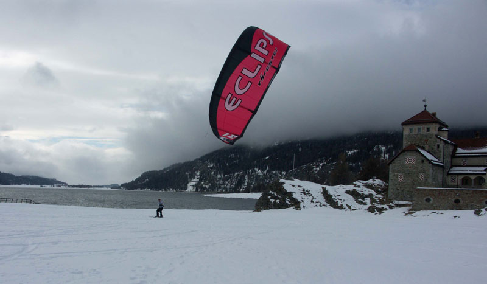

Snowkiting or Kite skiing is an outdoor winter sport where people use kite power to glide on snow or ice. The skier uses a kite to give them power over large jumps. The sport is similar to water-based kiteboarding, but with the footwear used in snowboarding or skiing.The principes of using the kite is the same, but in different terrain. In the early days of snowkiting, foil kites were the most common type; nowadays many kiteboarders use inflatable kites. However, since 2013, newly developed racing foil kites seem to dominate speed races and expedition races, like Red Bull Ragnarok (held on the Norwegian Hardangervidda plateau) and the Vake mini-expedition race (held at Norway's most northern Varanger peninsula).
Snowkiting differs from other alpine sports in that it is possible for the snowkiter to travel uphill and downhill with any wind direction. Like kiteboarding, snowkiting can be very hazardous and should be learned and practiced with care. Snowkiting is becoming increasingly popular in places often associated with skiing and snowboarding, such as Russia, Canada, Iceland, France, Switzerland, Austria, Norway, Sweden and the Northern and Central United States. The sport is becoming more diverse as adventurers use kites to travel great distances and sports enthusiasts push the boundaries of freestyle, big air, speed and back country exploration.
